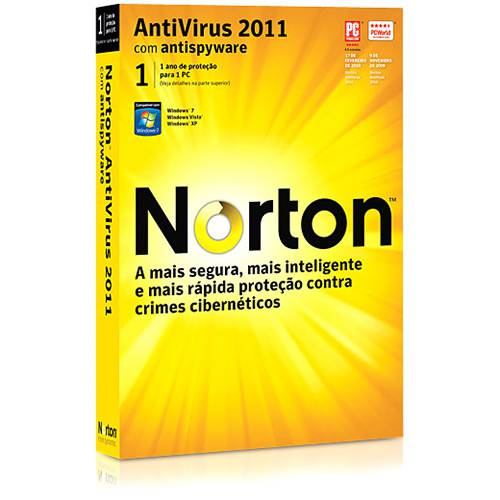

Antivirus Norton
||Placa de Video Gamer e suas Vantagens||
Os modelos de placas para gamers são mais capacitadas do que as GPUs embutidas nos processadores, tendo em vista que carregam recursos mais aprimorados. Enquanto o processador necessita de diversos outros controladores e precisa se encarregar de muitas funções, a GPU tem dedicação exclusiva ao processamento gráfico.
||Antivirus e suas Finalidades||
Importância de utilizar um antivírus. Quando o assunto é a segurança do nosso computador sempre surgem dúvidas quanto à utilização e a importância de um antivírus para a manutenção da nossa máquina. ... Os vírus do computador são pequenos programas que tem como propósito causar algum dano ao usuário.